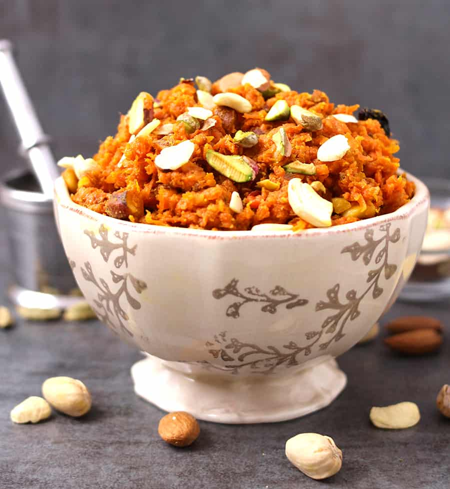

Gajar Ka Halwa

Description
The amazing and tasty Gajar Ka Halwa is a staple in the northern regions of India.
Made from carrots, this amazing recipe is bound to make your mouth water.
Ingredients
- 2 tablespoons sunflower seed oil
- 2 pounds carrots,grated
- 11⁄2 quarts of milk
- 2 cups white sugar
- 1⁄2 cup raisins
- 11⁄2teaspoons ground cardamom
- 1 pinch saffron threads
- 8 tablespoons chopped pistachio nuts
Steps
- Heat oil in a large saucepan over medium heat and add carrots. Cook and stir briefly, about 3 minutes. Pour in milk and increase heat; bring to a boil and cook, stirring constantly, for 5 minutes. Reduce heat to low and simmer gently, uncovered, for 1 hour.
- Bring carrot-milk mixture back to a boil. Add sugar, raisins, cardamom, and saffron. Cook and stir until mixture has thickened, about 10 minutes.
- Ladle carrot halwa into 8 individual serving dishes. Top each serving with 1 tablespoon pistachios. Serve warm or chill before serving.